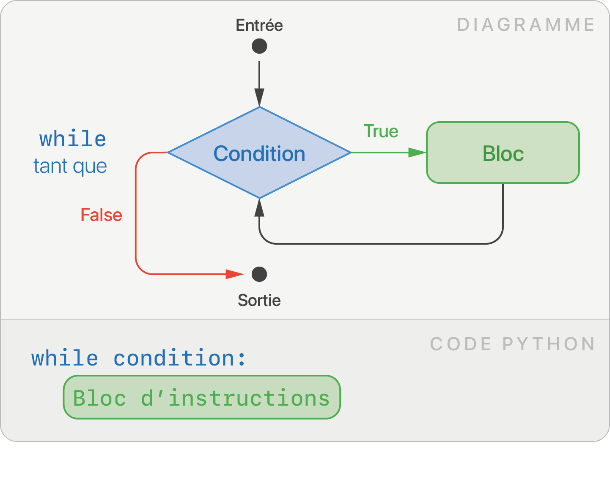

Feuille de triche
Révisions 1ère NSI sur Capytale
Types et Valeurs
Un programme manipule des valeurs. Chaque valeur appartient à un type particulier.
Principaux types
| Type | Terme anglais | Signification | Exemples de valeur |
|---|---|---|---|
int |
integer | Nombre entier | 45 -255 1998 |
float |
float | Nombre décimal (ou flottant) | 3.1412 -1.14152 |
str |
string | Chaîne de caractères (texte) | "Bonjour" "42" |
bool |
boolean | Booléen | True False |
Conversion entre types
Pour passer d'un type à l'autre, on utilise les fonctions int,
float, str ou bool.
>>> int(17.6) # float ► int
17
>>> int("42") # str ► int
42
>>> str(3.14) # float ► str
"3.14"
Variables
Une variable stocke une valeur et est identifiée par un nom. Lors de l’évaluation d’une expression, le nom d’une variable est alors substitué par sa valeur actuelle.
toto = 42 # affectation (initialisation)
toto = 56 # une nouvelle affectation écrase l'ancienne valeur
print(toto + 3) # substitution, affiche 59
On parle d'initialisation lors de la première affectation. Le symbole = est l'opérateur d'affectation.
Opérateurs arithmétiques
| Opérateur arithmétique | Signification | Exemple | Résultat |
|---|---|---|---|
+ |
Addition | 10 + 3 |
13 |
- |
Soustraction | 42 - 10.5 |
31.5 |
* |
Multiplication | 7 * 8 |
56 |
/ |
Division | 13 / 5 |
2.6 |
// |
Division entière | 13 // 5 |
2 |
% |
Reste dans la division entière (ou modulo) | 13 % 5 |
3 |
** |
Puissance | 4 ** 3 |
64 |
Les calculs suivent la priorité usuelle des opérateurs.
x += 10 # équivalent à x = x + 10
x *= 2 # équivalent à x = x * 2
x //= 2 # équivalent à x = x // 2
# etc.
Les opérateurs arithmétiques ont un sens différent suivant les types des valeurs manipulées :
"Oui" + "Non" # concaténation, renvoie "OuiNon"
"Oui" * 3 # renvoie "OuiOuiOui"
C'est tout l'intérêt d'avoir différents types, la machine les traite différemment.
Sortie / Entrée
-
La fonction
printpermet d'afficher une ou plusieurs valeurs.prénom = "Arthur" âge = 27 print(prénom, "a exactement ", âge, "ans") -
La fonction
inputrécupère une saisie utilisateur au clavier. Elle renvoie une chaîne de caractères.saisie = input("Rayon ?") # input renvoie une chaîne de caractères rayon = float(saisie) # conversion vers un nombre décimal aire = 3.14 * rayon * rayon print("Aire du disque: ", rayon)
Conditions
Les structures conditionnelles permettent d'exécuter des blocs de code spécifiques suivant le résultat d'une condition.
Opérateurs de comparaison et d'appartenance
Ces opérateurs renvoient un booléen : True ou False.
| Opérateurs de comparaison | Signification | Exemple | Résultat |
|---|---|---|---|
== |
égal à | 1 == 1 |
True |
!= |
différent de | 1 != 1 |
False |
> |
supérieur à | 2 > 0 |
True |
>= |
supérieur ou égal à | 4 >= 6 |
False |
< |
inférieur à | 5 < 5 |
False |
<= |
inférieur ou égal à | 5 <= 5 |
True |
| Opérateur d'appartenance | Signification | Exemple | Résultat |
|---|---|---|---|
élément in itérable |
élément est dans itérable |
"t" in "chat" |
True |
Opérateurs logiques
Les opérateurs logiques permettent de combiner des conditions. Ils fonctionnent entre deux booléens.
| Opérateurs logiques | Signification | Exemple | Résultat |
|---|---|---|---|
not |
non logique | not True |
False |
and |
et logique | False and True |
False |
or |
ou logique | False or True |
True |
if |
if else |
if elif else |
|---|---|---|
 |
note = int(input("Saisissez votre note au bac :"))
print("Votre mention est :")
if note >= 16:
print("Félicitations")
elif note >= 14:
print("Bien")
elif note >= 12:
print("Assez Bien")
else:
print("Pas de mention")
Boucles
Une boucle est une structure de contrôle de flot qui permet de répéter un bloc de code.
Boucle non-bornée while
Lorsque le nombre de répétitions n'est pas connu à l'avance, la boucle while permet de répéter un bloc d'instructions tant qu'une condition est vérifiée.

epaisseur = 0.0001
nombre_pliages = 0
while epaisseur < 324:
epaisseur = 2 * epaisseur
nombre_pliages += 1
print("Il faut", nombre_pliages, "pliages.")
Boucle bornée for
La boucle for parcourt un itérable, c'est-à-dire une structure de données qui peut être décomposée en une séquence d'éléments.
On dit que la variable élément parcourt itérable, elle va capturer chaque élément de l'itérable à chaque tour de boucle.
for caractere in "bonjour":
print(caractere)
for i in range(5):
print(i)
for elem in [1, 5, 17]:
print(elem)
Générer une séquence d'entiers avec range
Fonctions
# définition d'une fonction
def double(nombre): # nombre est un paramètre / argument
return nombre * 2 # return permet de renvoyer une valeur
résultat = double(21) # appel de la fonction
print(résultat) # affiche 42
Conteneurs
Tableau list
-
Opérations de base :
tab = [3, 4, 58, 10, 2] # Accès à un élément grâce à son indice print(tab[2]) # (lecture) affiche 58 tab[2] = 999 # (écriture) tab vaut [3, 4, 999, 10, 2] # Taille d'une liste print(len(tab)) # affiche 5 # Ajouter/retirer un élément tab.append(42) # tab vaut [3, 4, 999, 10, 2, 42] tab.remove(10) # tab vaut [3, 4, 999, 2, 42] -
Créer un tableau :
# Création explicite tab = [3, 4, 58, 10, 2] # Création à partir d'un élément tab = ['chat'] * 5 # ['chat', 'chat', 'chat', 'chat', 'chat'] # Création à partir d'un autre itérable tab = list(range(6)) # tab vaut [0, 1, 2, 3, 4, 5] tab = list("salut") # tab vaut ['s', 'a', 'l', 'u', 't'] # Création à partir d'une liste vide tab = [] # liste vide for i in range(5): tab.append(i * i) # tab vaut [0, 1, 4, 9, 16] # Liste en compréhensions tab = [i * i for i in range(5)] # tab vaut [0, 1, 4, 9, 16] tab_pair = [n for n in tab if n % 2 == 0] # (filtre) tab_pair vaut [0, 4, 16] -
Parcourir un tableau :
for élément in tab: # parcours par élément print(élément) for i in range(len(tab)): # parcours par indice print(tab[i])
Dictionnaire dict
# Construction explicite d'un dictionnaire :
eleve = {
"prénom": "Michel",
"nom": "Dupont",
"âge": 17,
"taille": 175
}
# On accède à une valeur, grâce à sa clé :
print(eleve["prénom"])
# Modification d'une valeur :
eleve["age"] = 42
# Suppression d'une association :
eleve.pop("taille") # (note : ici, la méthode .pop renvoie la valeur associée à la clé, donc 175)
print(eleve.keys()) # ensemble des clés
print(eleve.values()) # ensemble des valeurs
print(eleve.items()) # ensemble des clés-valeurs
# parcours par clé
for clé in eleve:
print(clé, eleve[clé])
# parcours par valeurs
for valeur in eleve.values():
print(valeur)
# parcours par clé et valeurs
for clé, valeur in eleve.items():
print(clé, valeur)